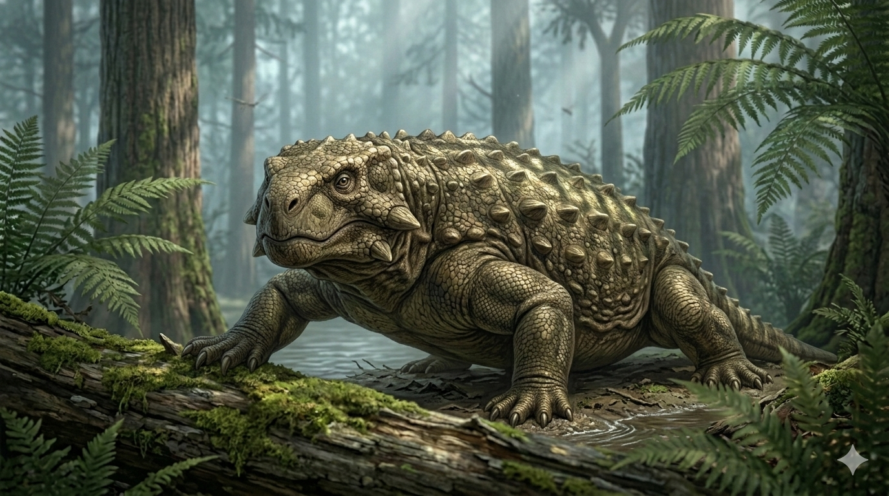

סקוטוזאורוס
The Armored Pareiasaur: Scutosaurus karpinskii

תיק מחקר: נתונים אבולוציוניים
תקופת פעילות
265 עד 254 מיליון שנה
שלהי תור הפרם (Lopingian)
מסה גופנית (משקל)
1 עד 1.1 טונות
מעל 1,100 קילוגרם של בשר ושריון קשקשים
ממדים (אורך)
2.5 עד 3 מטרים
מבנה גוף עצום ומסיבי הנתמך ביציבה חצי-זקופה
מיקום גיאוגרפי
צפון אירואסיה (רוסיה)
ממצאים עיקריים ומושלמים בהרי אורל ולאורך נהר דווינה הצפוני.
סיווג טקסונומי קריטי
פָּארָה-זוחל (Parareptilia) – פרייאזאור
קבוצת זוחלים קדומה ומשוריינת שנכחדה לחלוטין ללא צאצאים כיום. היוו את פסגת המסה וההגנה היבשתית בעידן שלהם.
01 // ניתוח אטימולוגי נרחב
| החלק בשם | שפת מקור | פירוש ומשמעות היסטורית |
|---|---|---|
| Scuto- | לטינית (Scutum) | מגן / שריון צינורי מתייחס ללוחות העצם החזקים שעטפו את גופו, בדומה למגן הלגיונר הרומאי ("סקוטום"). |
| -saurus | יוונית (σαῦρος) | לטאה / זוחל סיומת נפוצה לזוחלים קדומים. יחד: "לטאת השריון". |
| karpinskii | הוקרה אישית | אלכסנדר קרפינסקי שם המין ניתן כהוקרה לזכרו של אלכסנדר קרפינסקי, גיאולוג רוסי ונשיא האקדמיה למדעים של סנט פטרסבורג, שתמך כלכלית ומדעית בחפירות. |
השם המדעי הוענק בשנת 1922 על ידי הפלאונטולוג הרוסי ולדימיר פרוכורוביץ' אמליצקי.
02 // תולדות הגילוי: אוצרות נהר הדווינה
המשלחות של אמליצקי (1899)
בסוף המאה ה-19, חוקרים אירופאים מצאו שרידי חיות דומות בדרום אפריקה. ולדימיר אמליצקי שיער שאם יבשת-העל פנגיאה התקיימה, חיות דומות חייבות להימצא גם בחלקה הצפוני. הוא יצא למסע חפירות אדיר לאורך גדות נהר הדווינה הצפוני, סמוך לכפר סוקולקי ברוסיה.
בית הקברות של הענקים
ב-1899 הוא חשף עדשות סלע חול ענקיות שהכילו עשרות שלדים שלמים ומחוברים של סקוטוזאורוסים, שנלכדו ככל הנראה בשיטפונות בוץ. השלמות אפשרה למפות בדיוק מושלם כיצד כל לוחית שריון (Osteoderm) ישבה בעור החיה.
ביומכניקה: תא התססה באקלים צחיח
יציבה מתקדמת (נשיאת הטון)
בניגוד לזוחלים הקדומים שרגליהם השתרעו הצידה, משקלו האדיר של הסקוטוזאורוס אילץ אותו לפתח יציבה שונה. רגליו העבות מוקמו **מתחת לגופו** (Semi-erect), כמו עמודי תמיכה של בניין, כדי לשאת את משקל הבשר והשריון.
תא התססה נייד
באקלים הפרם הצחיח, הצמחייה הייתה סיבית וקשה. שיניו דמויות-העלים נועדו רק לתלישה. כל חלל הבטן העצום שלו פעל כ"תא התססה" מלא בקטריות שעיכל את המזון במשך ימים.
אסטרטגיית הגנה מול הגורגונופס
הוא היה חיה איטית שלא יכלה לברוח מטורפי-העל בעלי ניבי-החרב (כמו האינוסטרנצביה). הגנתו הייתה פסיבית: השריון האדיר והבליטות על צווארו הקשו על נשיכת הרג.
**תקשורת אקוסטית:** מניחים ש"חריץ אוטי" באחורי גולגולתו הכיל קרום תוף, שאפשר שמיעה והפקת צלילים בתדר נמוך שנעו למרחקים במישורים הפתוחים כדי להזהיר מטורפים.